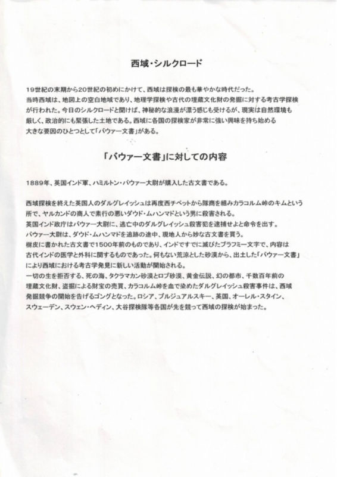

計画実行総責任者・成田正次氏による15年間にわたるタクラマカン砂漠への挑戦記録。1990年の初回冒険から2004年の北緯39度線完全横断まで、126枚の貴重な画像と詳細な記録で後世に残すプロジェクトです。砂漠探検、ラクダキャラバン、命がけの調査活動から最終的な横断成功まで、真の冒険家の軌跡をここに完全保存します。
15
年間の冒険期間
126
枚の貴重な記録
73
日間の最終横断
1200
km完全制覇距離

冒険の真の原点 - バウアー文書との出会い
1980年代、当時の世の中ではNHK特集『シルクロード』が話題となっていた時代背景の中、成田正次氏は図書館でバウアー文書と運命的な出会いを果たしました。この歴史的西域探検記録に深く感銘を受けた成田氏は、タクラマカン砂漠への強烈な憧憬を抱くようになります。
最初の計画は「タクラマカンラリー」でした。この革新的なアイデアを中国当局に相談したところ、即座に実行へと移され、1993年の歴史的な調査活動が開始されました。しかし、その調査から3ヶ月後、英国隊がラクダでタクラマカン砂漠横断という快挙を成し遂げたことを知ります。
「自分もラクダでタクラマカン砂漠を横断したい」- この強い想いが、11年後の2004年北緯39度線タクラマカン砂漠ラクダ横断という偉業へと結実したのです。バウアー文書から始まった壮大な冒険ストーリーがここに完成しました。
最初の計画は「タクラマカンラリー」でした。この革新的なアイデアを中国当局に相談したところ、即座に実行へと移され、1993年の歴史的な調査活動が開始されました。しかし、その調査から3ヶ月後、英国隊がラクダでタクラマカン砂漠横断という快挙を成し遂げたことを知ります。
「自分もラクダでタクラマカン砂漠を横断したい」- この強い想いが、11年後の2004年北緯39度線タクラマカン砂漠ラクダ横断という偉業へと結実したのです。バウアー文書から始まった壮大な冒険ストーリーがここに完成しました。
成田氏の冒険は観光旅行ではありません。車両、ラクダ、自転車、徒歩という多様な移動手段を駆使し、命の危険に何度も直面しながら、タクラマカン砂漠の完全制覇を目指した真の探検活動でした。特に1993年の調査では彭加木博士と同様の生死を分ける状況を経験し、2004年の73日間1,200km横断では人類の限界に挑戦した記録として永遠に語り継がれるでしょう。